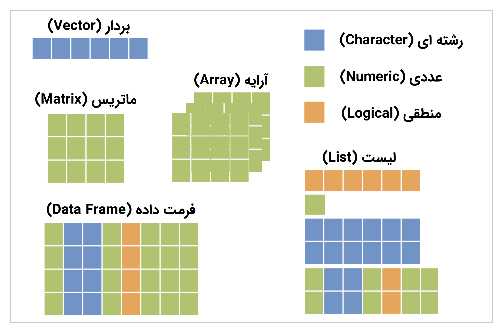

فصل 6 ساختار داده

شکل 6.1: ساختار داده در R
برای مدیریت دادهها در زبان برنامه نویسی R، ساختار دادههای مختلفی را در نظر گرفتهاند. مانند:
- بردار (Vector)
c(1, 2, "Mohsen", NA, 56)[1] "1" "2" "Mohsen" NA "56"1:4[1] 1 2 3 4- تولید یک بردار که مقادیر آن ترتیب خاصی دارند
(vec <- c("se", "yek", "se", "do"))[1] "se" "ye" "se" "do"- مرتب کردن برحسب حروف الفبا
sort(vec)[1] "do" "se" "se" "yek"- فاکتور (factor)
(fct <- factor(x = vec, levels = c("yek", "do", "se")))[1] se yek se do
Levels: yek do se- مرتب کردن بر حسب سطح بندی
sort(fct)[1] yek do se se
Levels: yek do se- ماتریس (Matrix)
matrix(data = 1:4, nrow = 2) [,1] [,2]
[1,] 1 3
[2,] 2 4- آرایه (Array)
array(data = 1:8, dim = c(2, 2, 2)), , 1
[,1] [,2]
[1,] 1 3
[2,] 2 4
, , 2
[,1] [,2]
[1,] 5 7
[2,] 6 8- فرمت داده (Data Frame)
data.frame(
"name" = c("ali", "sara", "reza"),
"age" = c(27, 20, 30)
) name age male
1 ali 27 TRUE
2 sara 20 FALSE
3 reza 30 TRUE- لیست (List)
list(
"vec" = 1:4,
"mat" = matrix(data = 1:4, nrow = 2),
"ary" = array(data = 1:8, dim = c(2, 2, 2)),
"df" = data.frame(
"name" = c("ali", "sara", "reza"),
"age" = c(27, 20, 30)
)
)$vec
[1] 1 2 3 4
$mat
[,1] [,2]
[1,] 1 3
[2,] 2 4
$ary
, , 1
[,1] [,2]
[1,] 1 3
[2,] 2 4
, , 2
[,1] [,2]
[1,] 5 7
[2,] 6 8
$df
name age
1 ali 27
2 sara 20
3 reza 30